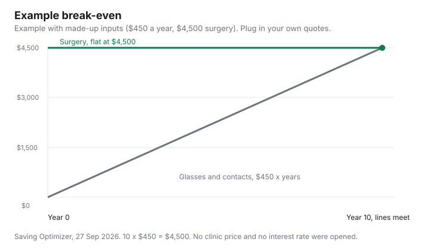

Healthcare · Canada
Laser Eye Surgery in Canada: Price Ranges, Financing Fine Print, and the Medical Expense Credit

An advertised “from” price is a floor, and this guide does not cite a current Canadian clinic fee schedule to say what the floor is. Health Canada’s laser eye surgery page, as of 27 Sep 2026, says cost is a factor because most health insurance plans do not cover laser eye surgery for vision correction. It does not print a dollar range. No price range from the Canadian Ophthalmological Society is cited here, so no range is invented. The method is to make two quotes describe the same procedure, then to see what the medical expense tax credit does to the amount you actually paid. This is education, not medical advice and not a ranking of clinics or surgeons.
Key takeaways
- Health Canada describes PRK, LASIK, LASEK, and Epi-LASIK. That page does not describe SMILE, so this guide does not invent a SMILE recovery time.
- A comparable quote names the procedure, whether the price is per eye or both eyes, whether enhancements are included, which follow-up visits are included, and the interest rate after any promotional period.
- No “from” price, financing APR, or break-even dollar from a clinic is listed here. The chart uses labelled illustrative inputs.
- CRA’s Medical Expenses 2025 lists laser eye surgery as the amount paid to a medical practitioner or a public or licensed private hospital. The threshold on that guide is the lesser of 3 percent of net income or $2,834.
- Provincial coverage and private-plan coverage are questions for the plan and the surgeon. This page does not tell you to have surgery.
LASIK, PRK and SMILE: how they differ in procedure and recovery
Health Canada’s page says the two excimer laser surgeries commonly performed in Canada are PRK, introduced in the early nineties, and LASIK, introduced in the mid-nineties. It also names LASEK and Epi-LASIK as more recent procedures.
On that description, PRK removes the outer layer of the cornea and the laser reshapes tissue underneath, with initial healing in about a week. LASIK cuts a flap, reshapes tissue under the flap, and replaces the flap, and the page says the eye heals more quickly than with PRK and that there is less post-operative pain. The same page says a flap brings its own complications, including a risk, for years, that the flap could dislocate if you play a sport where you may be hit in the face. It lists corneal infection as a serious complication of both PRK and LASIK. A mapping step the page calls Wavefront is described as a detailed map of the eye that the surgeon can advise on. LASEK, on that page, is a variation whose healing takes about two weeks and which the page says is used when the correction needed is minor.
SMILE is in the question people ask, and it is not in that Health Canada description. This page will not invent how SMILE differs in recovery or in price. If a quote says SMILE, ask the surgeon what tissue is removed, what the follow-up schedule is, and whether an enhancement is a second procedure with a second bill. The glasses guide and the contact lens guide are the ongoing-cost side of the same decision. They are not a reason to have surgery, and they are not a substitute for the assessment. Read Health Canada’s risk list with the surgeon. Do not treat this article as that conversation.
What a quote should include: assessment, enhancements and follow-up visits
Force the quote onto six lines before you compare two clinics. The procedure name, as the clinic will perform it, not the name in the ad.
Whether the number is per eye or for both eyes. The assessment: which tests are included, and which tests are extra if the surgeon wants them. Enhancements: whether a second treatment, if you need one, is included, for how long, and what “need” means in the contract. Follow-up visits: how many, over what period, and what happens if you need a visit after that period. Medications and the first set of drops, if they are extra. A quote that is one number cannot be compared with a quote that is six numbers.
Write the same two eyes on both quotes. A price for one eye is not a price for both until you multiply it, and a price that assumes you are a candidate is not a price if the assessment later says you are not. Ask what you pay if you are turned down after the assessment, and whether the assessment fee is credited toward surgery. No clinic’s assessment fee is listed here. The uninsured-fees guide is about other clinic charges, such as block fees and sick notes. It is not a laser price list. Keep the two topics apart.
Advertised 'from' prices vs what you'll actually pay
“From” means at least that amount, for the case the ad has in mind. Without the six lines above, you cannot tell whether the ad is one eye, both eyes, a named procedure, or a procedure plus the enhancement you might need.
This guide does not cite a dated clinic advertisement with a figure that can be checked, so no “from” dollar is printed. Health Canada’s cost sentence is the sourced one: most health insurance plans do not cover laser eye surgery for vision correction. Ask your provincial plan and your workplace plan in writing. Do not treat “most” as “yours.”
What you actually pay is the contract after the assessment, not the ad. Technology, a custom mapping step, a second procedure, and follow-up visits outside the package move the number. So does treating one eye only. Put the final contract number, not the ad, into the worksheet below. If the clinic will not say whether enhancements are included, you do not yet have a price. You have a floor.
Financing fine print: promotional interest and deferred-interest traps
A monthly payment is not a discount. Read four clauses before you sign a finance contract.
Is the interest rate promotional, and on what date does it change? Does interest accrue during the promotional period? If a balance remains on the payoff date, is that accrued interest added to what you owe? Is there a fee for paying the balance early, and is the lender the clinic or another company? This page does not quote a clinic contract or a lender’s rate sheet, so no APR is printed. A payment that looks small can be a larger total than the cash price once the promotional period ends.
Pay the cash price in the worksheet, and put the financed total beside it as a second number if you are considering payments. The break-even chart below uses the cash amount. If you finance, the amount you pay over time can be higher than that cash amount, and the medical expense is the amount you paid for the surgery, not a slogan in the ad. Confirm with the CRA and the lender what is interest and what is the medical procedure. Interest on borrowed money is not assumed here to be a medical expense. This is not tax advice and not a recommendation to finance.
Claiming laser eye surgery on the medical expense tax credit
CRA’s Medical Expenses 2025 lists “Laser eye surgery” as the amount paid to a medical practitioner or a public or licensed private hospital. That is an eligible expense on the list as of 27 Sep 2026.
It does not say a province pays the surgery. The threshold examples in that guide subtract the lesser of 3 percent of line 23600 or $2,834 from the expenses. The medical expense guide is how the credit works, including which spouse claims. The credit applies to the amount above the threshold. It does not return the whole surgical fee. Confirm the threshold for the year you file. Keep the receipt that shows who was paid.
The eye-exam guide is a different public benefit. An exam the province insures is not a promise that it insures refractive surgery. Workplace vision maximums, if you have them, are in the booklet. This page does not cite a plan that pays a fixed amount toward laser surgery, so none is printed. Ask the plan whether laser surgery is eligible, whether it needs pre-approval, and whether the fitting of glasses in the same year shares a cap.
Break-even vs glasses and contacts over time (reader worksheet)
Break-even is your annual glasses-and-contacts cost, multiplied by years, compared with the surgery amount you were actually quoted. Add later enhancements and later glasses if the contract does not include them.
The row below is illustrative so the chart has a shape. It is not a quote. Illustrative inputs: $450 a year for glasses and contacts combined, and $4,500 for surgery paid in year 0, with no enhancement and no further glasses. At those inputs, 10 times $450 is $4,500, so the lines meet in year 10. Change either input and the year moves. If you finance, use the total you will pay, not the cash price, or the meeting point is fiction.
| Line | Clinic A | Clinic B | Illustrative set (not a quote) |
|---|---|---|---|
| Procedure name | Not named. Health Canada’s page does not price a procedure. | ||
| Per eye or both eyes | Both eyes, as a single illustrative $4,500. | ||
| Enhancements included? | Assumed included. If yours are not, add them. | ||
| Follow-up visits included | Not specified. Write the number from the contract. | ||
| APR after the promo, if any | None entered. No rate is listed here. | ||
| Your annual glasses and contacts | $450 a year, illustrative. | ||
| Years until the lines meet | 10 years, because 10 × $450 = $4,500. |

Sources
- Health Canada, “Laser eye surgery,” as of 27 Sep 2026. PRK, LASIK, LASEK, and Epi-LASIK descriptions, including healing language and the statement that most health insurance plans do not cover laser eye surgery for vision correction. SMILE is not described on that page. No price is printed there.
- Canada Revenue Agency, Medical Expenses 2025 (RC4065), as of 27 Sep 2026. Laser eye surgery is the amount paid to a medical practitioner or a public or licensed private hospital. Threshold examples use the lesser of 3 percent of line 23600 or $2,834.
- No Canadian Ophthalmological Society price range is cited here. No clinic “from” price, assessment fee, or financing APR is listed here. The chart uses labelled illustrative inputs.
Frequently asked questions
How much does laser eye surgery cost in Canada?
This page does not print a price, because no dated clinic fee schedule is listed here. Health Canada’s page says most health insurance plans do not cover laser eye surgery for vision correction, and it does not give a dollar range. Ask each clinic for the procedure, per eye or both eyes, enhancements, and follow-ups as separate lines, and put only the contract amount into the worksheet.
Is PRK cheaper than LASIK?
No price comparison is listed here, so this page does not say that one procedure costs less. Health Canada describes PRK as removing the outer layer, with initial healing in about a week, and LASIK as a flap that heals more quickly, with less post-operative pain and with flap-related risks. SMILE is not described on that page. A quote that uses a different procedure name is not comparable until the clinic defines it.
What should a laser eye surgery quote include?
The procedure that will actually be performed, whether the price is per eye or for both eyes, which assessment tests are included, whether an enhancement is included and for how long, which follow-up visits are included, and the interest rate after any promotional period. A single “from” number does not answer those lines. No sample clinic quote is listed here. If the clinic will not say whether a second treatment is included, you do not have a final price yet.
Is laser eye surgery financing a good idea?
This page does not call financing a good or bad idea. It asks you to read whether the rate is promotional, whether interest accrues during the promo, whether unpaid interest is added if a balance remains, and whether the lender is the clinic. No APR is listed here, so none is printed. Compare the total you will pay with the cash price before you sign, because a small monthly payment can still be a larger total.
Can I claim laser eye surgery on my taxes?
CRA’s Medical Expenses 2025 lists laser eye surgery as the amount paid to a medical practitioner or a public or licensed private hospital. The credit applies after the threshold, which that guide puts at the lesser of 3 percent of net income or $2,834. It is not a refund of the whole fee. Confirm the threshold for the year you file, keep the receipt, and treat this as education rather than tax advice.
Researched and drafted with AI assistance and fact-checked against official Canadian sources. How we create content.